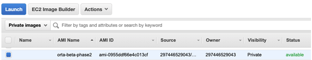

The Arm VHT AMI is powered by Amazon Web Services (AWS) and gives you access to a ready-to-use Amazon Machine Image (AMI) that is a configured Amazon EC2 Linux instance with Arm VHT Systems, compiler, and other tools.
- Note
- Arm VHT in AWS Marketplace is not yet available, but until it is ready the Arm VHT AMI can be shared privately to closed beta users. During closed beta we need therefore your AWS Account number and GitHub user name.
The Arm VHT AMI solution enables many concurrent instances that let you accelerate test and verification workflow. AMI is also highly integrated in platforms such as GitHub, making it ideal for modern DevOps.
The following AWS tutorials help you to get started:
Access the Arm VHT AMI
In the AWS EC2 Management Console, set the region to N. Virginia (us-east-1) which is currently the only region that hosts the "Orta-Beta" images. To access the image:
- Select in the AWS EC2 Management Console from "All services" Compute - EC2 which opens the AWS EC2 Management Console.
- In the AWS EC2 Management Console select Images - AMIs.
- Then select Private images as filter. An Orta Beta AMI should be visible (details may change the AMI gets updated) as shown below.

- Note
- The private AMI is region specific so if you are not in region N. Virginia it will not appear.
Launch the Arm VHT AMI
There are two ways to launch an EC2 instance based on the Orta AMI, using the AWS Console or using a command line script.
Launch via AWS Console
The following steps launch Arm VHT AMI (currently named Orta-beta-phase2) from the AWS Console:
- Choose AMI: Select the AMI Arm VHT AMI (currently named Orta-beta-phase2) and click Launch.
- Choose an Instance Type: Select t3.medium (2 vCPUs, 4 GiB memory) is recommended. An instance with more resources may improve performance.
- Configure Instance Details: Under Network select a VPC. Note: a public IP address is required for SSH access.
- Add Storage: The default storage 24 GiB is sufficient for most applications. Optionally, this can be increased if needed.
- Add Tags: This is optional, however adding the Key=Name with a meaningful Value helps you to identify the EC2 instance.
- Configure Security Group: Set Type: SSH, Protocol: TCP, Port Range: 22, Source: My IP (or Anywhere) to allow access from your IP address.
- Review Instance Launch: allows you to verify the setup. Then click Launch
You may then select an existing key pair or create a new key pair. When an existing key pair is selected, confirm in the dialog the check box I acknowledge.... To finally start, click Launch Instances.

Launch via Command Line Script
The second way to launch the Arm Orta AMI is using a command line script.
The script will be provided in GitHub at (location to be determined).
Connect to the EC2 Instance
There are multiple ways to connect to the Amazon EC2 Linux instance that runs Arm VHT. For more information refer to:
Using SSH
The connect via the Secure Shell (SSH) client of your computer, use the following command:
$ ssh -i <path>/your_key.pem ubuntu@<Public IPv4 DNS>
Where:
- ssh is the SSH command
- option -i specifies the location of the AWS private key file that has the file extension *.pem.
- ubuntu is the user name of the Amazon EC2 Ubuntu Linux instance.
- **<Public IPv4 DNS>** is the public address typically in the format: ec2-*nn*-*nn*-*nn*-*nn*.compute-1.amazonaws.com
You can review this details also under the AWS EC2 Management Console under EC2 - Instances - <select instance> - Connect and then select the tab SSH Client.
Using VNC
Some applications may require a display. Virtual Network Computing (VNC) is available in the Arm VHT AMI and can be used as a remote desktop.
First, setup VNC password.
When prompted, enter a password. A read-only password is not required.
To start VNC every time the machine is rebooted enable it to start on boot:
$ sudo systemctl enable vncserver@1.service
To start VNC now (1 time, without rebooting) use:
$ sudo systemctl start vncserver@1.service
To disable VNC from running on future machine restarts run:
$ sudo systemctl disable vncserver@1.service
To stop VNC now use:
$ sudo systemctl stop vncserver@1.service
If VNC is running on the EC2 instance a VNC client can be used to connect. The easiest way to connect is by forwarding the VNC port using ssh. With this technique no additional ports need to be opened in the EC2 security group.
To connect use SSH port forwarding to avoid opening any other ports in the AWS security group
$ ssh -i /path/to/aws.pem -L 5901:localhost:5901 ubuntu@@<EC2-IP-addr>
Open a VNC viewer, such as TigerVNC. Enter the VNC server as localhost:5901 and click Connect. It should ask for the previously set password and then present a remote desktop.

Using Code Server
Code Server is automatically running on the AMI on port 8080. To connect use port forwarding to ssh into the EC2 instance.
$ ssh -i /path/to/aws.pem -L 8080:localhost:8080 ubuntu@@<EC2-IP-addr>
Using a local browser connect to http://localhost:8080 and you should see Visual Studio Code appear in the browser.
Running Micro Speech
Run the micro speech example. Connect to the EC2 instance using ssh as described above and then get the example, compile, and run.
$ git clone https://github.com/MDK-Packs/VHT-TFLmicrospeech.git
For shared private projects your GitHub Username and Password key will be required to clone.
$ cd ./VHT-TFLmicrospeech/Platform_FVP_Corstone_SSE-300_Ethos-U55
$ cp_install.sh packlist
$ cbuild.sh microspeech.Example.cprj
$ ./run_example.sh
The output should display:
Fast Models [11.15.14 (Jun 23 2021)]
Copyright 2000-2021 ARM Limited.
All Rights Reserved.
telnetterminal0: Listening for serial connection on port 5000
telnetterminal1: Listening for serial connection on port 5001
telnetterminal2: Listening for serial connection on port 5002
telnetterminal5: Listening for serial connection on port 5003
Ethos-U rev f19bc8d4 --- Apr 23 2021 13:24:11
(C) COPYRIGHT 2019-2021 Arm Limited
ALL RIGHTS RESERVED
Heard yes (147) @1000ms
Heard no (141) @5600ms
Heard yes (149) @9100ms
Heard no (142) @13600ms
Heard yes (149) @17100ms
Info: Simulation is stopping. Reason: Cycle limit has been exceeded.
Info: /OSCI/SystemC: Simulation stopped by user.
[warning ][main@0][01 ns] Simulation stopped by user
--- cpu_core statistics: ----------------------------------------------------
Simulated time : 20.000002s
User time : 396.865593s
System time : 1.924400s
Wall time : 398.550649s
Performance index : 0.05
cpu_core.cpu0 : 10.03 MIPS ( 4000000000 Inst)
----------------------------------------------------------------------------